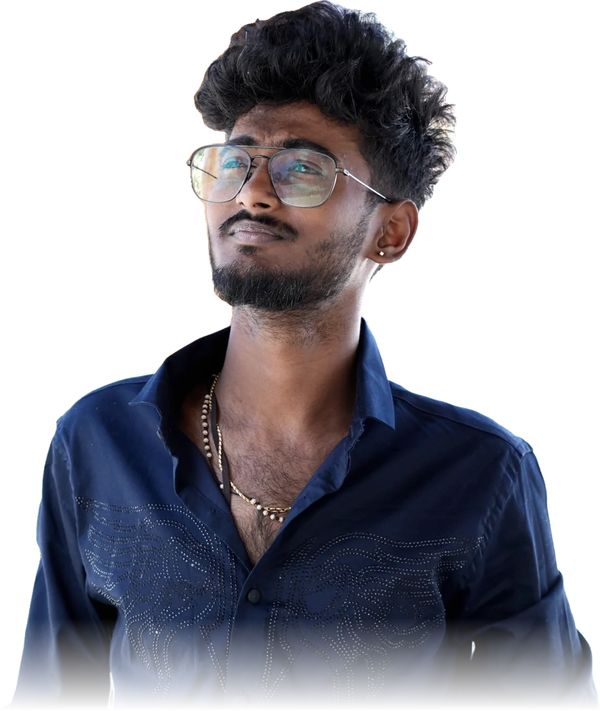
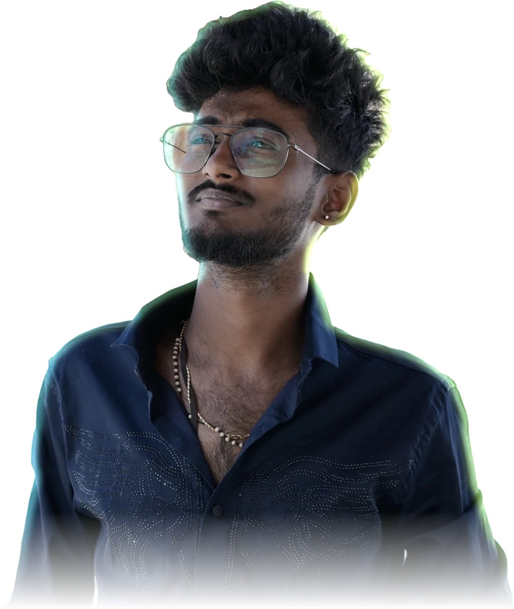

ROOTS
OF LEGACY.
OF LEGACY.

EDITING THE ORDINARY. ENGINEERING THE EXTRAORDINARY.
I’m Jagan A., a creator who manages and a manager who creates. Video Editor Head, Project Manager and HR at Brandstep, MBA (HR), and an AI filmmaker.
EXPLORE01 / SELECTED WORK
Four projects that shaped my career: one I directed, one I crafted, one that sold, and one I built.

02 / THE PERSON BEHIND THE PIXELS
I make the work, and I make the work happen. One day I'm cutting a product film, the next I'm running the team that delivers ten of them.
I started with words: a degree in English taught me how a story is built. Then I picked up the edit timeline, then the team, then the whole operation. Today I lead editing, people and projects at Brandstep, with an MBA in HR to back the people side.
SEE HOW I GOT HERE ↓03 / TWO SIDES, ONE PERSON
Most people pick one side. I work on both, and that's why my projects ship on time and still look good.
◆ THE CREATOR
Reels, ads, brand films and event AVs. Pacing, sound and colour. Premiere Pro · After Effects · DaVinci Resolve.
Concept to frame to film with Google Flow (Veo), Gemini, Higgsfield and Claude. Heritage stories and product worlds.
Tamil and English ad scripts with emotion beats, hooks and calls to action that sell.
Meta lead campaigns, landing pages and festive launches for interior, wedding and FMCG brands.
◆ THE MANAGER
I lead the editing team. I set the workflow, review every cut and keep the quality bar high.
Client communication, timelines and delivery. I built the CRM, operations dashboards and sprint trackers the agency runs on.
Hiring, onboarding, attendance and people operations, backed by an MBA in HR.
I lead the sales team with daily activity tracking and weekly pipeline reviews from lead to closed deal.
04 / THE JOURNEY
Where I started, how I grew and where I stand now.
B.A. ENGLISH · GRADUATE
Before frames, there were words. Studying English taught me structure, voice and what makes people feel something.
BRANDSTEP DIGITAL MARKETING AGENCY
Joined the agency on the timeline: reels, ads and brand films for real clients on real deadlines.
VIDEO EDITOR HEAD
Moved from editing my own cuts to running the edit team: workflows, reviews and the standard every video has to meet.
HR · TEAM COORDINATION
Took on HR: hiring, onboarding, attendance and keeping a growing creative team in rhythm.
PROJECT MANAGER
Owning client communication, delivery timelines and the sales pipeline, and building the CRM and dashboards behind it all.
MBA (HR) COMPLETED · BUILDING BRANDSTEP AI
Directing AI films, leading editing, HR and projects, and building an AI marketing platform of my own. This is where I stand, and I'm still climbing.

05 / HAVE A GOOD IDEA?
A film, a campaign, or a team that needs leading? Message me on WhatsApp. I usually reply the same day.